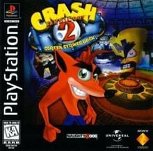

Developer: Naughty Dog
Release date: October 31, 1997
Genre: Platformer
Game available at: Not available on any official platform, but can be played on original PlayStation console or emulators.
About the game:
Crash Bandicoot 2: Cortex Strikes Back is a platformer game where players control Crash Bandicoot as he navigates through various levels, collecting crystals and defeating enemies.
What I liked about the game:
Simple but precise platforming. Enjoyable to get all the collectibles.